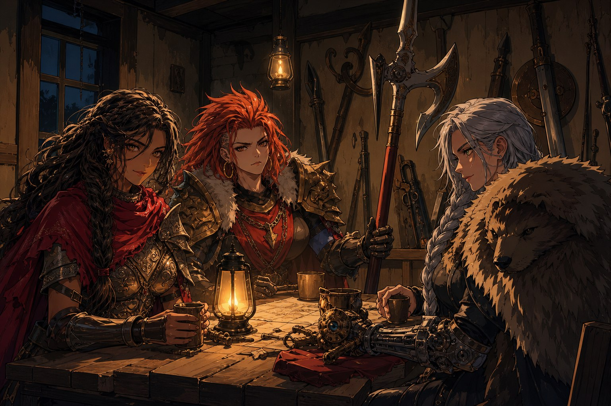
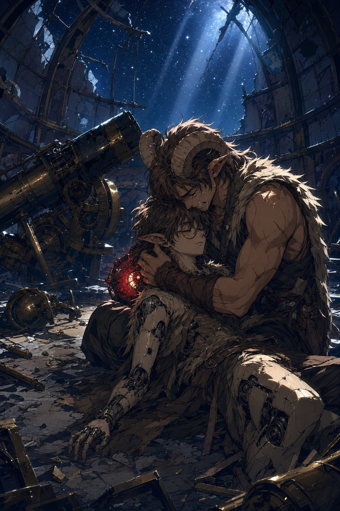
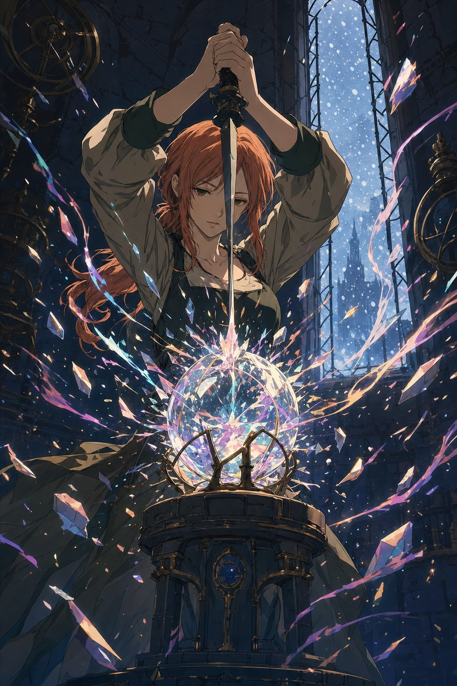

농가에 둘러앉아, ‘잔당’들은 자신들의 내력을 들려주었다. 그들은 산맥 서쪽에서 언데드의 군세와 전쟁을 치른 군단의 살아남은 사람들이었다. 잿불의 왕이 이끄는 언데드에 맞서 인류의 운명을 건 싸움을 했지만, 산맥을 두어 개 넘어온 이 동쪽에서는 그 전쟁조차 옛날 얘기처럼 들린다는 것을 알고 그들은 조금 놀랐다고 했다. 어느 여름날 언데드가 하루아침에 모두 잿더미가 된 뒤 전쟁은 끝났고, 사도 피어의 뜻에 따라 군단은 해산했다. 붉은 발티야, 은빛 사붓한 바람, 도베르트 다 사니치, 그리고 사도 레이피어. 여기에 곰 가죽을 두른 사도 일레나와 황금빛 타오르는 눈보라가 더해진 이들은, 사도를 다시 인간으로 되돌릴 방법을 찾아 동쪽으로 왔다. 사도란 맹렬하게 타오르는 촛불 같아서, 큰 힘을 가진 대신 수명이 짧다. 그렇게 대단한 마법사라면 사도를 되돌릴 방법도 있지 않을까 하는, 희박한 희망에 건 여정이었다. 그러나 동쪽에 와서 알게 된 것은 아르카딘이 백스물일곱 해 전에 죽었다는 사실뿐이었다.
에일라는 자신이 세라의 연구소에 있었다고 조용히 밝혔다. 레이피어가 놀랐다. 세라는 아르카딘의 제자로, 스승보다도 시공간 마법에 능했던 인물. 그녀의 연구소는 이 근방 남쪽에 있다고 알려졌지만, 좌표를 시간축 속에 감춰두어 아무도 갈 수 없다고 했다. 공간을 차지하는 것이 아니라 시간을 차지하고 있어, 하늘 위의 섬처럼 아예 보이지도 않는다고. 그곳에 들어가는 방법은 셋. 시간축을 공간축으로 되돌리는 대마법, 세라만이 알던 출입 마법, 그리고 ‘시간 돌파 장치’. 어쩌면 에일라가 그 장치를 썼던 것이 아닐까. 레이피어는 남동쪽 동부 천문관측소 폐허에 그 장치가 있을지 모른다며, 단서를 찾아봐달라 부탁했다. 자신들은 아르카딘의 생가가 있다는 북쪽을 뒤져보겠다고. 그러면서 페어리 문자를 읽는 자글롬에게, 군단에 들어올 생각은 없느냐고 슬쩍 물었다.
동부 천문관측소
폐허에 다다르자, 염소뿔이 달린 낡은 옷의 파운 전사가 해골 기사와 숨 막히는 합을 주고받고 있었다. 뒤에서 쓰러져 있던 해골 궁수가 일어나 그를 겨누는 것을 세 사람이 막아주었다. 세틀러 브라이진이라는 모험가였다. 그는 이 년 동안 동생을 추적해왔다고 했다. 검은 로브의 마법사들에게 납치된 동생 실반이 이곳에 끌려온 것 같다는 이야기를 들었다는 것이다. 놈들은 벽을 통과해 사라졌다고, 아니 문으로 나갔던가, 하고 세틀러는 어딘가 혼란스러워하며 머리를 긁적였다.
던전은 해골들로 득시글거렸다. 카운트다운에 이은 레이저 트랩을 처리하자, 어디선가 느리고 쓸쓸하지만 안심이 되는, 자장가 같은 노랫소리가 들려왔다. 에일라가 걸음을 멈췄다. “이건 저의 노래가 아닙니다.” 감정이 사라지면서 노래를 할 수 없게 되었던 기억이 난다고 했다. 노래란 감정과 관계없는 것이라 여겼는데, 감정을 잃자 부를 수 없게 되었다고. 그리고 그 사실에 대해서도 자신은 별 감정을 느끼지 못했다고. 서쪽 섬 한가운데에는 수정구처럼 생긴 장치가 있었고, 다가가거나 만지려 하면 분노와 슬픔, 재미와 행복이 통제할 수 없이 소용돌이쳤다.

형과 동생
관측실에서 실반은 그저 망원경 앞에 못마땅한 표정으로 서 있었다. 세틀러가 “드디어 내가 구하러 왔어!” 하고 외치자, 실반은 “닥쳐, 세틀러. 제발 그만해” 하고는 말없이 단검을 꺼내 형의 배를 찔렀다. 격렬한 보스전이 이어졌고, 실반의 머리 뒤에서는 기계 심장이 빛났다. 그를 쓰러뜨린 뒤에야 진실이 드러났다. 실반은 이 년 전, 이곳에서 형과 함께 몬스터를 물리치고 장치를 손에 넣었지만, 돌아가는 길의 트랩에 즉사했다. 세틀러는 자고 있던 형을 순간이동시키고 자신은 사라졌다. 시체가 증발해버려 죽음의 증거를 찾지 못한 세틀러는 현실을 받아들이지 못했고, 그 격렬한 감정을 이 천문대의 증폭기가 증폭시켰다. 그 감정이 이곳에 남아 있던 인형 공장의 회로를 태우고 형의 기억으로 덮어써, 공장은 ‘실반’을 만들어냈다.
“하지만 난, 실반이 아니야.” 자신은 세틀러가 기억하는 실반으로 만들어졌을 뿐, 진짜 실반의 기억은 전혀 갖고 있지 않다고 했다. 오직 형과의 기억만 있을 뿐이라고. 어릴 적 형이 자신을 안고 기뻐하다 떨어뜨릴 뻔한 일부터, 부모가 죽고 저택에서 함께 도망친 일까지. “나는 형 안에 남아있던 실반의 메아리일 뿐이야.” 이 재회는 이미 몇 번이고 반복되었다고 했다. 세틀러의 감정이 하루가 지날 때마다 그를 다시 만들어냈고, 그때마다 동료들의 기억까지 지워지는 저주가 되어버렸다고. “제발, 나를 그만 만들어. 부탁이야.” 세틀러는 아이처럼 목청껏 울부짖으며 “난 너의 형이야”만을 되풀이했다. 녹티스는 실반에게 자신들이 증인이 되어주겠다고 말했다.

증폭기
이 저주를 끝내려면 서쪽 섬의 증폭기를 부숴야 했다. 평범한 망치질 몇 번이면 부서질 만큼 약한 물건이었지만, 다가가거나 파괴하려는 마음을 먹는 것만으로 감정이 폭발하도록 만들어져 있었다. 실제로 그 방에서, 파티원들은 저마다 걷잡을 수 없는 눈물과 분노에 휩싸였다. 그때 에일라가 나섰다. “제가 해봐도 될까요.” 여러분이 부탁한다면 하겠다는 그녀는, 무표정하게 증폭기를 두드려보고는 단검으로 내리쳤다. 파편이 조금 튀었다. “조금, 두렵습니다.” 그러면서도 그녀는 웃으며 돌아보았고, 몇 번이고 다시 내리쳤다. “이이익, 부서져! 부서지라고!” 감정이 거의 없는 그녀가, 감정으로 만들어진 그 장치를 끝내 부수는 동안, 밖에서는 첫눈이 내리기 시작했다.
증폭기가 부서지자 실반이 쓰러졌다. 세틀러가 달려갔다. 실반은 형이 좋은 사람인 걸 안다고, 실반도 분명 형을 좋아했을 거라고 말했다. “고마워, 형. 이제 반복되지 않을 겁니다.” 세틀러는 기계 인형을 붙잡고 아이처럼 오열했다. 녹티스는 그런 세틀러에게, 이별은 두렵고 슬프며 몇 번을 겪어도 익숙해지지 않는 감정이라고 말해주었다. 오랜 세월을 산 학자만이 건넬 수 있는 위로였다. 한참 뒤, 대자로 누운 세틀러가 도와줘서 고맙다며, 그토록 찾던 시간 돌파 장치를 넘겨주었다. “세라의 연구소. 갈 수 있게 되었네요.” 에일라는 여전히 아무 표정 없이 말했지만, 자글롬은 아주 조금, 그녀의 목소리가 떨리는 것 같다고 느꼈다.